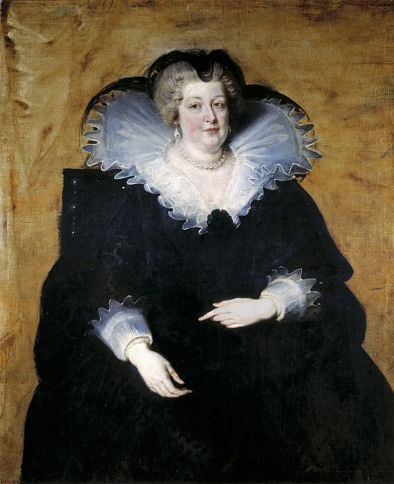

Мария Медичи, королева-мать Франции

Мария Медичи (итал. Maria de Medici, фр. Marie de Médicis; 26 апреля 1575(15750426), Флоренция — 3 июля 1642, Кёльн) — королева Франции, вторая жена Генриха IV Бурбона, мать Людовика XIII.